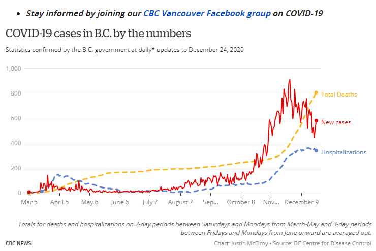
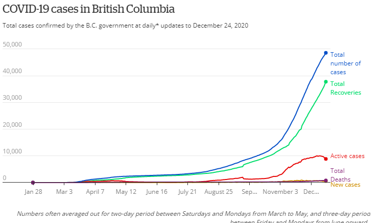
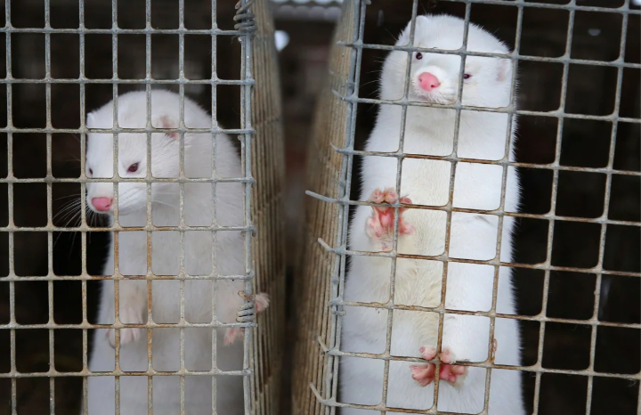

BC Covid Deaths, December
December 23rd, 2020
CBC:
TDC_ARTICLE_START
B.C. has confirmed 673 more cases of COVID-19 and 21 more people have died of the disease, Provincial Health Officer Dr. Bonnie Henry announced Thursday.
There are now 10,009 active cases of the novel coronavirus across the province. Of those, 358 patients are in hospital, including 93 in critical care.
TDC_ARTICLE_STOP

Above is a graph with a few different items on it. The yellow is total deaths, the red is new cases, and the blue is ongoing hospitalizations. You may notice, that despite "muh lockdown," the numbers are still going up. Sure, maybe these are fake numbers, in the sense of people dying with Covid being listed as dying of Covid, when it was some other cause, but for the most part I believe it.
I said on TRS many times, all the way back in March, that these lockdowns are fake. And I don't mean that in the lolbertarian "muh freedoms," bullshit way, I mean imagine that this disease was as deadly as Ebola and as contagious as SARS. Now imagine the horseshit arbitrary "lockdown" rules that the Corporate State Complex shoves us through. A real lockdown would be actual essential workers only, and by essential I mean the absolute barest numbers required to get essential power up and running, deliver food to peoples houses, and ensure running water and the bare minimum healthcare. Truly essential. Not, marijuana shops.
You can never let an enemy get away with a fake argument, by focusing on how gay it is. Yes, masks are gay and unhygenic, and there's no evidence that they work. However, don't let the gayness distract you from the fact that this is all fake, and these health guidelines are not scientific at all, nor are they nearly strong enough to stop a real disease outbreak.
And, as the image above shows, they haven't.
TDC_ARTICLE_START
To date, 44,776 have had confirmed cases of the disease in B.C. and 713 people have died. Once again, Henry said the majority of new deaths recorded Thursday were seniors in long-term care.
Acute care beds in B.C. hospitals are now about 88 per cent occupied, according to Health Minister Adrian Dix, compared to more than 100 per cent at this time last year before the pandemic began. Nonetheless, a field hospital established at the Vancouver Convention Centre is available to receive patients if necessary on 48 hours notice.
TDC_ARTICLE_STOP

More than... 100%????
I have to admit I'm as confuzzled as Marky Mark. How could we have more than 100% of Acute care beds filled at one time? This is not me being cute, I don't think that words mean what this propagandist thinks they mean.
CBC Propagandist Bethany Lindsay
Regardless, it's interesting to see that hospital use is actually down, which fits with people subjective impressions. The idea that hospitals would be overflowing with CoronaCorpses or what have you was pretty hilarious, and never even came remotely close to being true.
Switching to another CBC piece.
CBC:
TDC_ARTICLE_START
There are 582 new cases of COVID-19 in British Columbia, according to a release issued by Dr. Bonnie Henry, provincial health officer, and Adrian Dix, minister of health.
Another 12 people have died. In total, 808 people have died of COVID-19 in the province to date.
There are now 8,865 active cases in B.C. There are 9,732 people in isolation and under active surveillance by public health workers because of exposure to known cases of the novel coronavirus.
A total of 341 people are currently in hospital, including 78 people in intensive care.
TDC_ARTICLE_STOP

The above graphic was included in the article, and it's quite interesting. There have been 808 deaths, and almost 50,000 known infections. That's known, not simply presumed, and it's quite likely that there is a far higher amount of infected than known, because the asymptomatic have a high chance of never being diagnosed.
Regardless, at 50k infected and 800 deaths, that's a death rate of 1.6%, at the highest. As noted in a previous article, the death rate for the seasonal flu hovers around 1% most years, some years higher.
So no, Covidtastrophism is fake, and the reason this feels like a joke, is because it is a joke, with the exception of old people in retirement homes, who the government should be giving drastically better care in far more isolation. Instead we have the workers, through no real fault of their own, bringing Covid, the reaper of grandma, into these homes and killing the old people. But rather than the Corporate State Complex do something relatively cheap and easy, like give special care to old people, perhaps building makeshift hospitals for them, we have absurdist dumbassery "wear you're meeeaaassskk," that has no scientific validity at all.
And meanwhile, Billionaires are laughing all the way to the bank.
TDC_ARTICLE_START
Meanwhile, three mink on a second Fraser Valley mink farm have tested positive for COVID-19.
The B.C. farm is currently under a quarantine order. This means no animals or material can be moved from the farm under the order.
No workers at the farm have tested positive for COVID-19, but 23 animals died on the farm between Dec. 19 and 23. The farm has about 1,000 mink.
TDC_ARTICLE_STOP

Poor guys. Vicious, but beautiful creatures.
TDC_ARTICLE_START
Keep Christmas small this year
In their written statement Dix and Henry encouraged British Columbians to keep Christmas celebrations small this year. They encouraged people to spend the holiday weekend participating in "virtual activities" like a church service, concert or theatre performance, or dropping off a warm meal or treat to friends and neighbours.
"By staying small and staying apart this holiday season, we're protecting the people we care about most and ensuring the coming weeks and months are better, brighter and safer for everyone. Together, let's make this holiday season a safe season for all of us."
TDC_ARTICLE_STOP

No more Christmas, goy